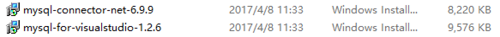
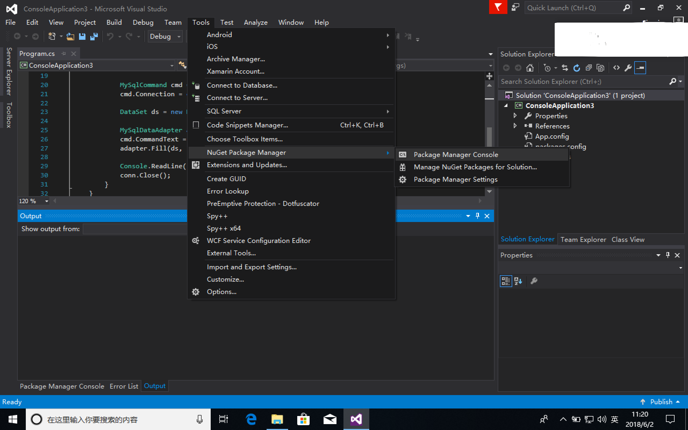
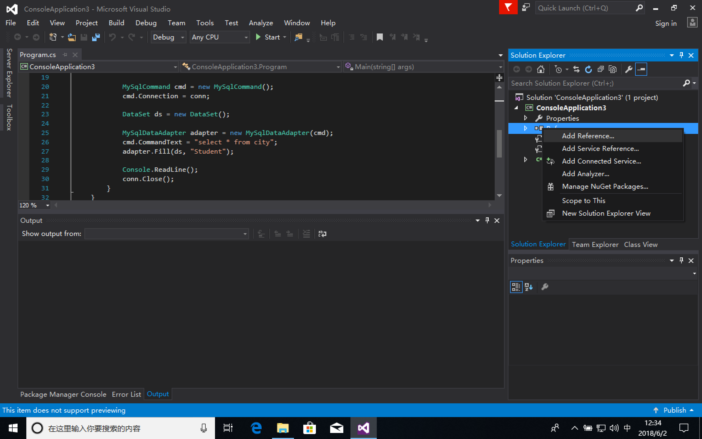
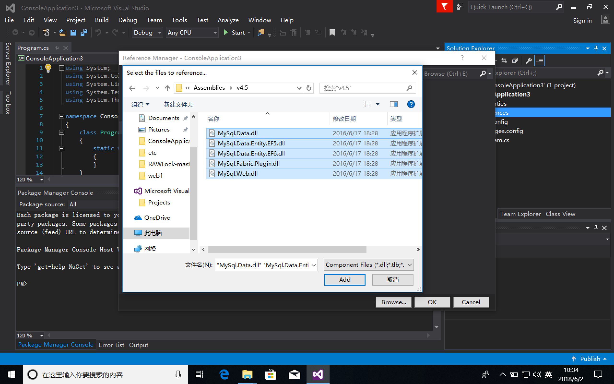

- 首先安装如下两个软件

两个软件均选择 Typical 安装即可。
- 在vs2015中新建一个项目（我这里演示用的C#控制台项目）
- 选择NuGet程序包管理器

选择 Package Manager Console，然后输入如下指令
1 | Install-Package EntityFramework -Version 6.0.0 |
- 在自己的项目中，选择 References，然后 Add Reference。

然后找到之前安装的 MySQL Connector Net 6.9.9 的下的文件夹 Assemblies（我的在 C:\Program Files (x86)\MySQL\MySQL Connector Net 6.9.9\Assemblies），导入文件夹中的所有 .dll 文件。

这样就完成了所有配置了。
可以利用如下的代码测试是否连接成功。
1 | string connString = "server = 127.0.0.1; user id = root; password=password;persistsecurityinfo = True; database = world"; |
参考教程